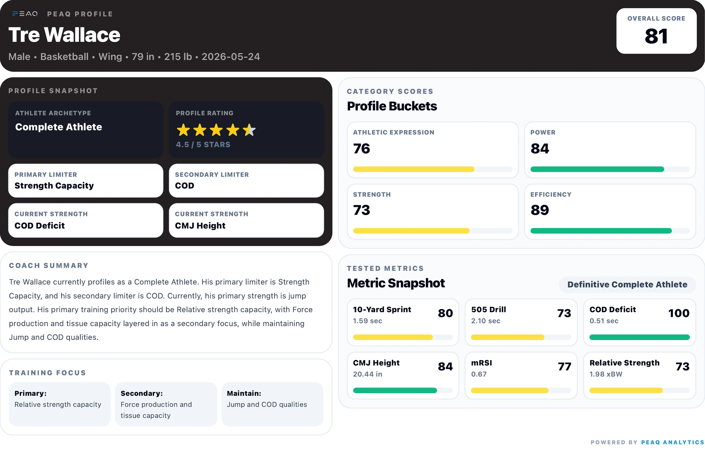
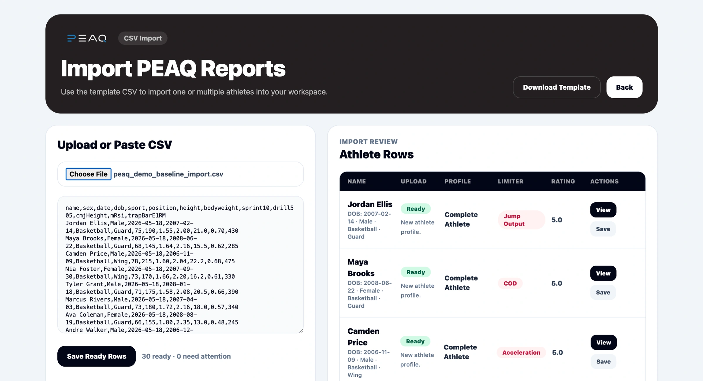
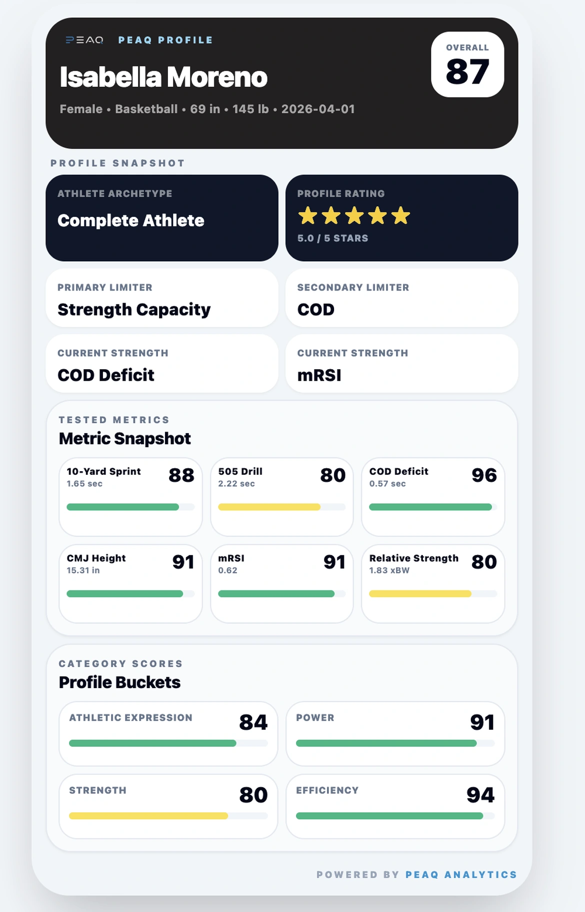
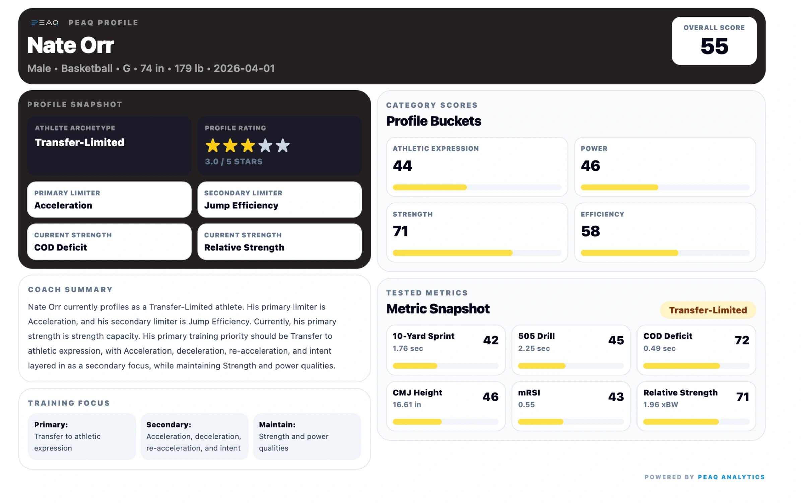
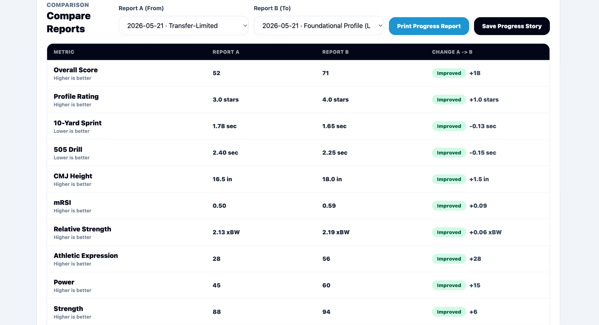
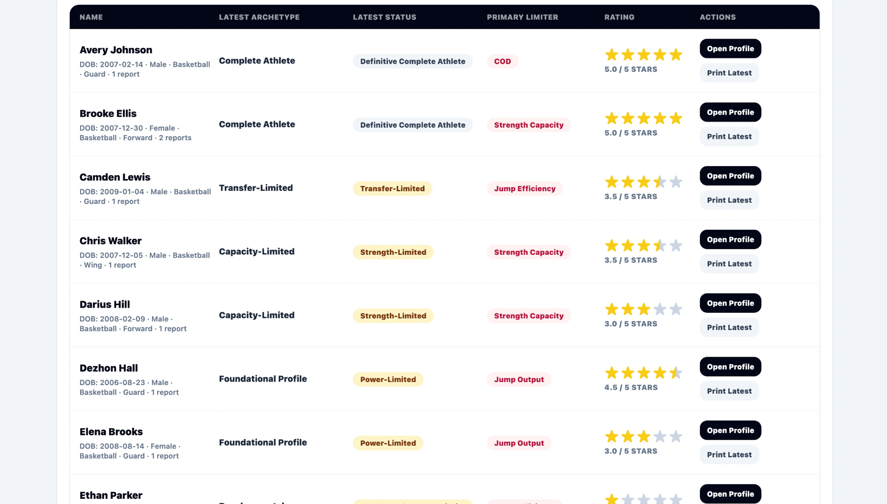

Import testing data
Bring in athlete testing from a CSV template or enter key metrics manually.
PEAQ helps sports performance coaches profile athletes, identify priorities, create coach-ready reports, and compare progress across retesting windows.

Import testing data, profile athletes, identify priorities, and turn results into clear next steps.
Bring in athlete testing from a CSV template or enter key metrics manually.
Translate core tests into scores, buckets, statuses, and profile context.
Identify limiters, strengths, and next-step training priorities without getting buried in a spreadsheet.
Create clean reports and track athlete changes across retesting windows.
Upload a group, review what is ready, and clean up rows that need attention before profiles are saved.


Create clean, mobile-friendly profile cards that help athletes understand their results, celebrate progress, and share their development story with coaches, teammates, parents, or social media.
Profiles turn into a clean visual story with metric-level detail close by when a coach needs to explain the profile.


Progress comparisons show what changed between reports, so coaches can explain development without rebuilding the story by hand.

Saved athletes, saved reports, progress comparisons, and filters live together in one coach workspace.
PEAQ is organized around the performance qualities coaches already test across sports: speed, change of direction, power, jumping, efficiency, and strength. The workflow stays consistent while the athlete context can change by team, sport, and setting.
Built for basketball, football, soccer, volleyball, baseball, softball, tennis, and multi-sport performance environments.
Teams, facilities, schools, clubs, camps, combines, and return-to-performance settings can use PEAQ to move from testing sessions to clearer next steps for athletes, parents, sport coaches, and staff.
The platform can grow into custom protocols, team dashboards, sport-specific norms, and organization-level reporting.
Early access includes setup support and a clear path from first import to first report, so coaches can get useful output with their own athletes.
Request access to see how PEAQ can support athlete profiling, reporting, and progress tracking in your setting.
Share your testing workflow, get a coach workspace, and run your first profiles with support.